The Timeline
1990-2006
Greece, Italy, France, Monaco, Turkey
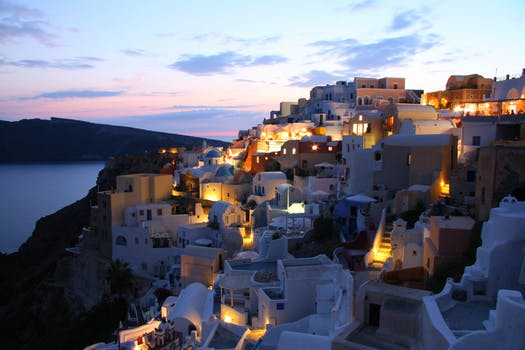
Ancient sun-bleached ruins pierce blue skies as the Aegean laps at the endless coastline. And Greek culture is alive - passionate music, inspired cuisine, thrill-seeking activities.
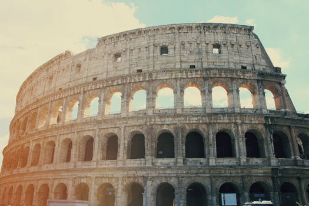
Home to many of the world's greatest works of art, architecture and gastronomy, Italy elates, inspires and moves like no other.
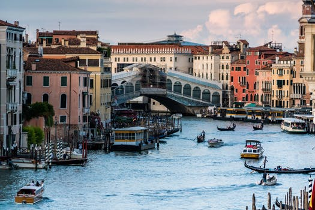
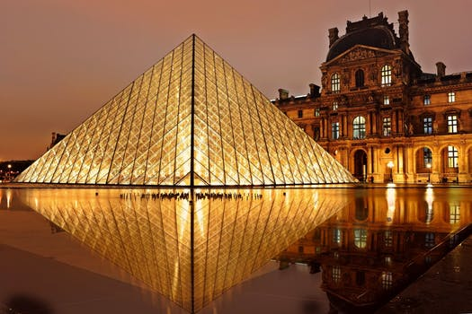
France seduces travellers with its unfalteringly familiar culture, woven around cafe terraces, village-square markets and lace-curtained bistros with their plat du jour chalked on the board.
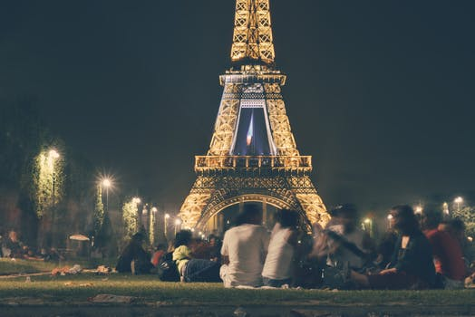

Squeezed into just 200 hectares, this principality might be the world's second-smallest country (the Vatican is smaller), but what it lacks in size it makes up for in attitude. A magnet for high-rollers and hedonists since the early 20th century, it's also one of the world's most notorious tax havens (residents pay no income tax). It's also famous for its annual Formula 1 Grand Prix, held every year in May since 1929.
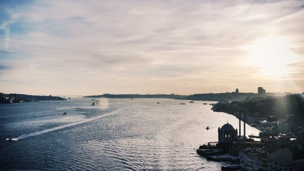
A richly historical land with some of the best cuisine you will ever taste, scenery from beaches to mountains and the great city of Istanbul.
2009-2011
Canada, Spain, Vatican City
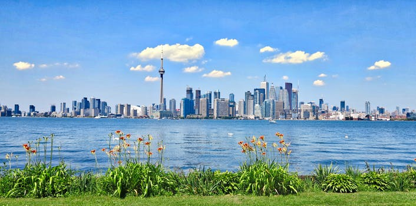
From dogsledding in the Northwest Territories to surfing in Tofino, from the history of Old Quebec to the vibrancy of multicultural Toronto, from breathtakingly empty prairie skies to the warm welcome on George St in St John's, from the thrill of skiing in the Rockies to the serenity of paddling past a moose in Algonquin Park - there's nowhere else on earth that offers the range of adventures that await you in Canada.
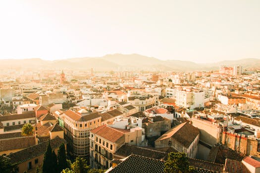
Passionate, sophisticated and devoted to living the good life, Spain is both a stereotype come to life and a country more diverse than you ever imagined.
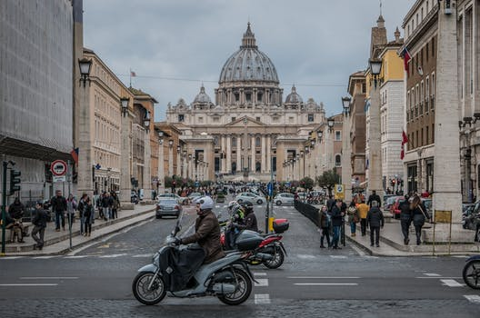
2013-2014
Russia, China, Macau, Thailand, India, Brasil, Argentina, Chile, Urugray, The Netherlands, Portugal
The world's largest country offers it all, from historic cities and idyllic countryside to artistic riches, epic train rides and vodka-fuelled nightlife.
China. The name alone makes you want to get packing. It's going places, so jump aboard, go along for the ride and see where it's headed.
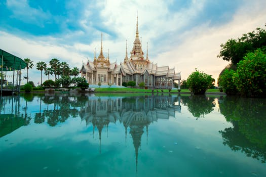
Friendly and fun loving, exotic and tropical, cultured and historic, Thailand radiates a golden hue from its glittering temples and tropical beaches through to the ever-comforting Thai smile.
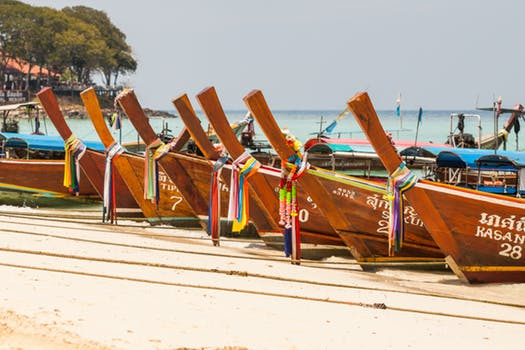
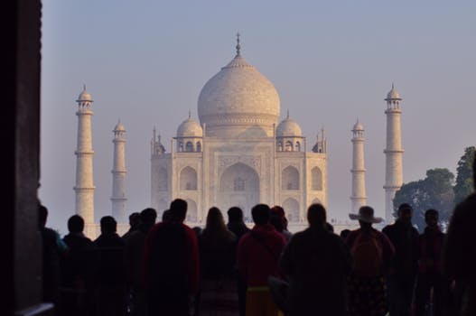
A land of remarkable diversity - from ancient traditions and artistic heritage to magnificent landscapes and culinary creations - India will ignite your curiosity, shake your senses and warm your soul.
One of the world's most captivating places, Brazil is a country of powdery white-sand beaches, verdant rainforests and wild, rhythm-filled metropolises. Brazil's attractions extend from frozen-in-time colonial towns to otherworldly landscapes of red-rock canyons, thundering waterfalls and coral-fringed tropical islands. Then there's Brazil's biodiversity: legendary in scope, its diverse ecosystems boast the greatest collection of plant and animal species found anywhere on earth. There are countless places where you can spot iconic species in Brazil, including toucans, scarlet macaws, howler monkeys, capybara, pink dolphins, sea turtles and thousands of other living species.
It's apparent why Argentina has long held travelers in awe: tango, beef, gauchos, futbol, Patagonia, the Andes. The classics alone make a formidable wanderlust cocktail.
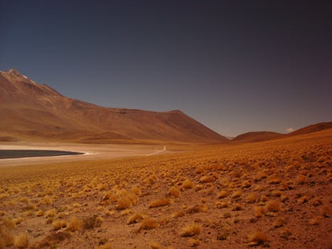
Chile is nature on a colossal scale, but travel here is surprisingly easy if you don't rush it.
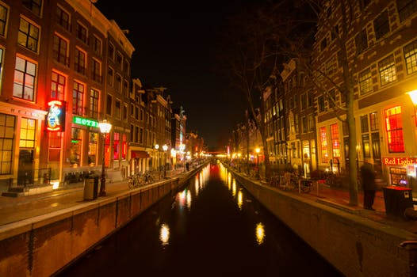
Tradition and innovation intertwine here: artistic masterpieces, windmills, tulips and candlelit cafes coexist with groundbreaking architecture, cutting-edge design and phenomenal nightlife.
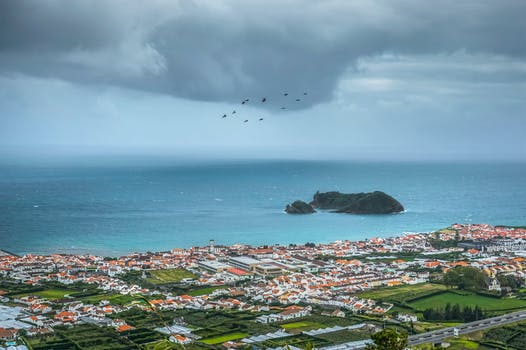
Medieval castles, cobblestone villages, captivating cities and golden beaches: the Portugal experience can be many things. History, great food and idyllic scenery are just the beginning...
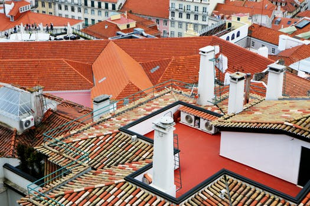
2015-2017
Colombia, Sweden, Egypt, Jordan, The UK, Japan
Soaring Andean summits, unspoiled Caribbean coast, enigmatic Amazon jungle, cryptic archaeological ruins and cobbled colonial communities. Colombia boasts all of South America's allure, and more.
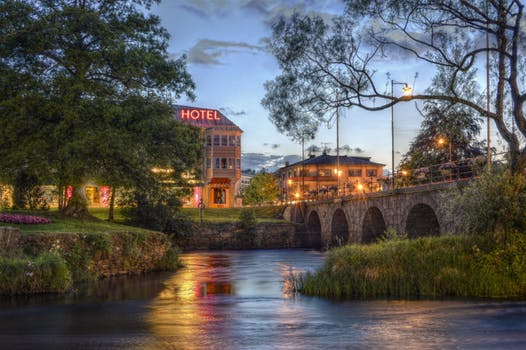
Frozen wastelands, cosy cottages, virgin forest, rocky islands, reindeer herders and Viking lore - Sweden has all that plus impeccable style and to-die-for dining.
In spite of political, financial and social turmoil, Egyptians remain proud and defiant and are as welcoming as ever to visitors to their land.
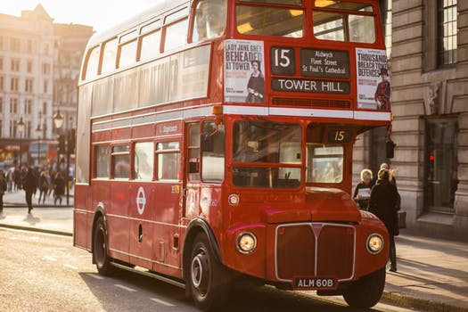
Made up of Great Britain and Northern Ireland, the United Kingdom may not always seem very united - indeed, Scotland came close to voting for independence in 2014. Yet this historic state is packed with appeal for the visitor, from pulsing cities to stunning countryside. England, Scotland, Wales and Northern Ireland are fine destinations in their own right, and travels between these countries reveal both the shared culture and distinct local flavours that contribute to the UK.

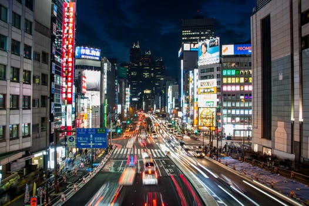
Japan is truly timeless, a place where ancient traditions are fused with modern life as if it were the most natural thing in the world.
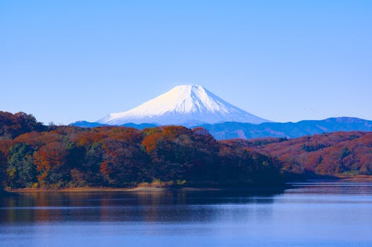